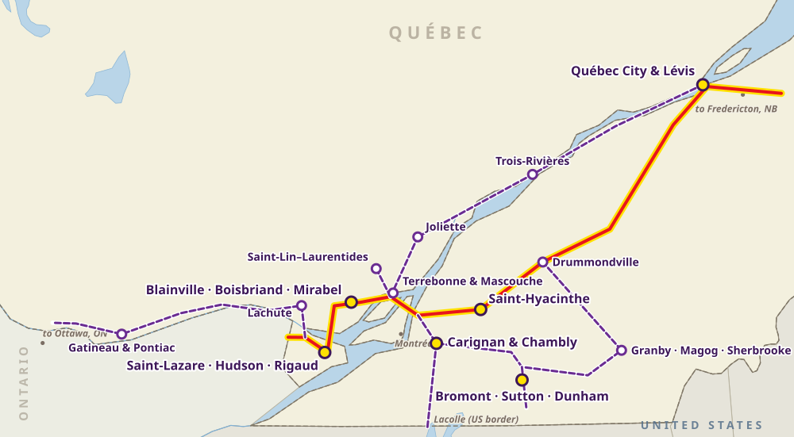

Québec
Transport de chevaux au Québec
De Saint-Lazare et des Laurentides jusqu’à Bromont, aux Cantons-de-l’Est et à Québec, Nexa Horse Transport relie les communautés équestres du Québec par les autoroutes 40 et 20, et au reste du Canada toutes les deux semaines.
Cette page a été traduite de l’anglais à l’aide de l’intelligence artificielle et peut contenir des erreurs. Nous l’offrons par respect pour la langue française et pour nos clients du Québec. En cas de différence, la version anglaise s’applique.
Nos trajets au Québec

- Principales communautés équestres
- Communautés régionales
- Trajet principal
- Embranchement
Corridor ouest et Outaouais
- Saint-Lazare, Hudson et Rigaud : écuries de pension, domaines privés et sentiers
- Gatineau et Pontiac : Luskville, Quyon, le long de la rivière des Outaouais
Laurentides et Lanaudière
- Blainville, Boisbriand et Mirabel : centres de saut d’obstacles et d’entraînement
- Lachute et Saint-Lin–Laurentides : élevages et entraînement
- Terrebonne, Mascouche et Joliette : écuries au nord de Montréal
Montérégie et Cantons-de-l’Est
- Bromont, Sutton et Dunham : pôle de compétitions internationales
- Saint-Hyacinthe et la vallée du Richelieu : Carignan, Chambly, hôpital vétérinaire équin
- Granby, Magog et Sherbrooke
Centre-du-Québec et Capitale-Nationale
- Drummondville et Trois-Rivières
- Québec et Lévis : Saint-Augustin-de-Desmaures, Saint-Apollinaire
Trajets
Trajet principal, d’ouest en est
Saint-Lazare → Blainville / Mirabel → Saint-Hyacinthe → Drummondville → Québec / Lévis
Autoroute 40 est, puis autoroute 20 est · environ 310 à 340 km
Le Québec d’un océan à l’autre
Langley (C.-B.) → Alberta → Prairies → Ontario → Québec → Halifax
Toutes les deux semaines, sur les routes canadiennes
Bon à savoir
D’écurie à écurie
Ramassage et livraison à l’écurie, au site de compétition ou à la clinique. Envoyez-nous les adresses exactes.
Soins en route
Arrêts réguliers avec foin et eau fraîche en tout temps. Pas de grain sur la route. Prévoyez assez de balles de foin pour tout le voyage.
D’un océan à l’autre
Le Québec fait partie de notre trajet entre Langley (C.-B.) et Halifax, toutes les deux semaines.
Préavis et suivi
Au moins deux heures de préavis avant le ramassage et la livraison, et des nouvelles chaque jour en route.
Le formulaire de réservation est une demande d’estimation. Rien n’est confirmé avant notre appel ou courriel.
Questions fréquentes
Combien coûte le transport d’un cheval au Québec?
Nexa facture par cheval, par kilomètre, plus TPS. Pour les trajets de moins de 400 km : 2,00 $/km (stalle standard), 2,20 $/km (stalle plus spacieuse), 3,00 $/km (box). Au-delà de 400 km : 1,20 $, 1,40 $ et 2,00 $/km. Minimum de 300 $ par voyage.
Pouvez-vous transporter un cheval de l’Alberta au Québec?
Oui. Nos trajets entre l’Ouest et le Québec restent sur les routes canadiennes, sans passer par les États-Unis.
Le formulaire de réservation est-il en français?
Le formulaire est en anglais pour le moment. Vous pouvez aussi nous appeler ou nous écrire : nous répondrons avec plaisir.
Nos autres trajets
Calgary & Cochrane · Edmonton · Red Deer · British Columbia · Langley, BC · Saskatchewan · Manitoba · Ontario · Québec · New Brunswick · Nova Scotia · Prince Edward Island · Coast to coast · Long-distance across Canada
Pour un voyage précis, demandez une estimation ou appelez le 1-844-491-6392 (sans frais).